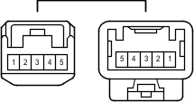

Наименование
Главный кабель моторного отсека и жгут проводов щитка (усиление панели приборов)
Код
Ar1
Каталожный номер
90980-12366/90980-12365
Цвет
Белый
Технические характеристики

Расположение
Электропроводка в панели приборов (для моделей с правосторонним рулевым управлением) 1
Система
Индикатор ECT и A/T (для моделей с 2TR-FE)
Система управления двигателем (для моделей с 2TR-FE)
Система управления двигателем (для моделей с 5L-E)
Система запуска (для моделей без системы посадки и запуска)